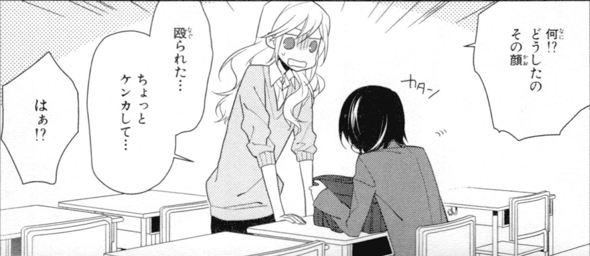
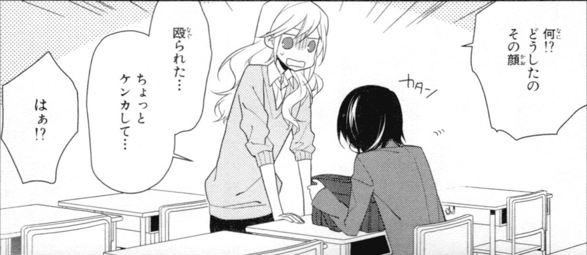
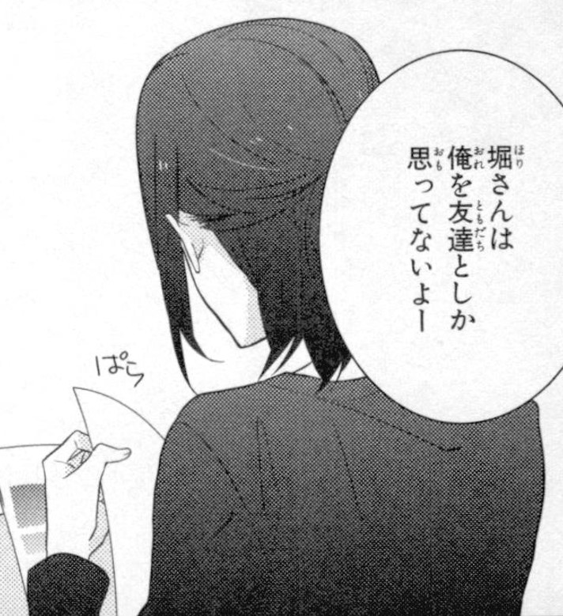
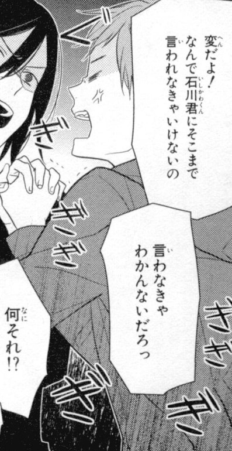
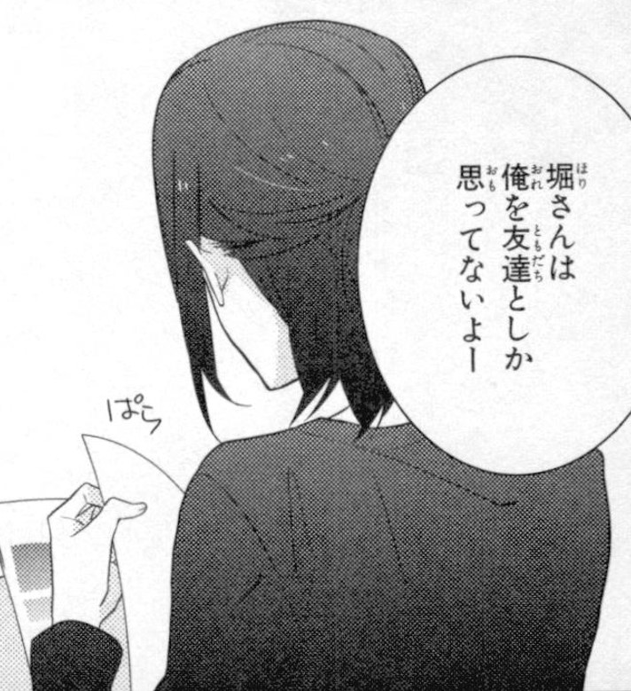
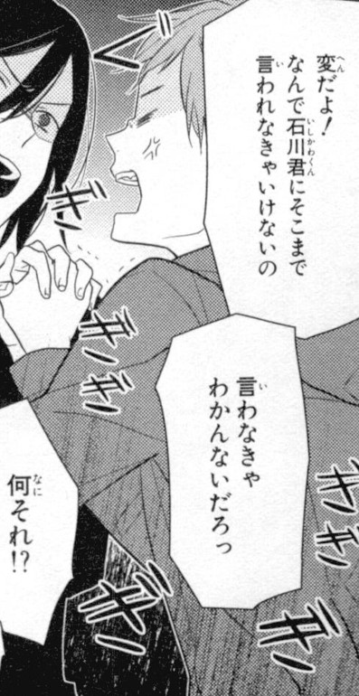

WaniKani
汚す 常識 偶 難 深刻 脅威 灰 選挙 損失
絆 憐れむ それでも 周 周り愛想 優 寄り添おう魂 遠慮 狩 目的 介 行動して 偉 躊躇 黙 奢り
TaeKim
- Potential られる, ぇる、こと できる
- Certainty でしょう、だろう、かもしれない、っけ、かな
- Appearance よう、みたい、～そう、らしい、っぽい
- Trying ようにする、ようになる、violitionalとする、てformみる
- Conditional ぇば、pastら（ば）、なら（ば）、と・だと、ては*、きゃ・ちゃ
- Causative and passive させる、られる
- More topics 思いきゃ、がてら、あげく （挙句）
ホリミヤ
 ～ちゃう
～ちゃう
 ～られてる
られる
～られてる
られる
 しか
 しか
 きゃ
しか
 しか
 きゃ